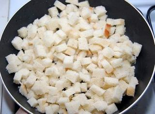
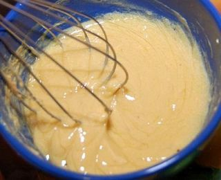
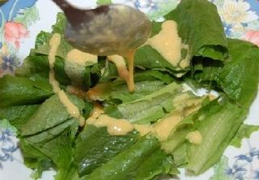

Шаг 1: Готовим гренки (крутоны).

Срезаем с хлеба корочки и нарезаем мякиш небольшими кубиками. Чеснок чистим и нарезаем кусочками средней толщины.
Сковороду смазываем оливковым маслом, разогреваем и обжариваем чеснок на среднем огне 2-3 минуты. Затем выкладываем чеснок и кладем на сковороду хлеб. Огонь уменьшаем до слабого и обжариваем хлеб, помешивая, до образования румяной корочки. Готовые гренки перекладываем из сковороды в миску и остужаем.
Шаг 2: Готовим соус.

Яйца отвариваем: кладем их в кипящую воду и варим 8-10 минут. Горячую воду сливаем и сразу же заливаем вареные яйца холодной водой. Даем им полежать в холодной воде 3-5 минут – это нужно для того, чтобы скорлупа очищалась легче. Затем яйца чистим, режем пополам и вынимаем желтки.
Желтки разминаем вилкой, добавляем горчицу и перемешиваем. Затем добавляем остальные ингредиенты: сок лимона, уксус, оливковое масло. Смесь тщательно перемешиваем до однородной консистенции (можно при помощи миксера).
Шаг 3: Готовим салат.

Листья салата заранее замачиваем в холодной воде на час, для того, чтобы салат дольше оставался хрустящим. После листья достаем и обсушиваем на бумажном полотенце.
Рвем листья салата руками на кусочки средней величины. Заливаем салат соусом.
Если семга со шкуркой и косточками, удаляем их. Сначала вырезаем ножом косточку, затем срезаем шкурку.
Режем семгу тонкими полосками или кубиками средней величины. Нарезанную семгу выкладываем в салат.
Помидоры черри моем в холодной проточной воде, ошпариваем кипятком и нарезаем кубиками или просто пополам. Выкладываем помидоры черри в салат. Туда же выкладываем гренки.
Сыр «Пармезан» трем на мелкой терке и посыпаем им салат.